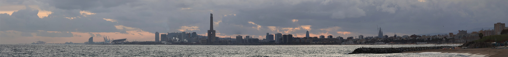
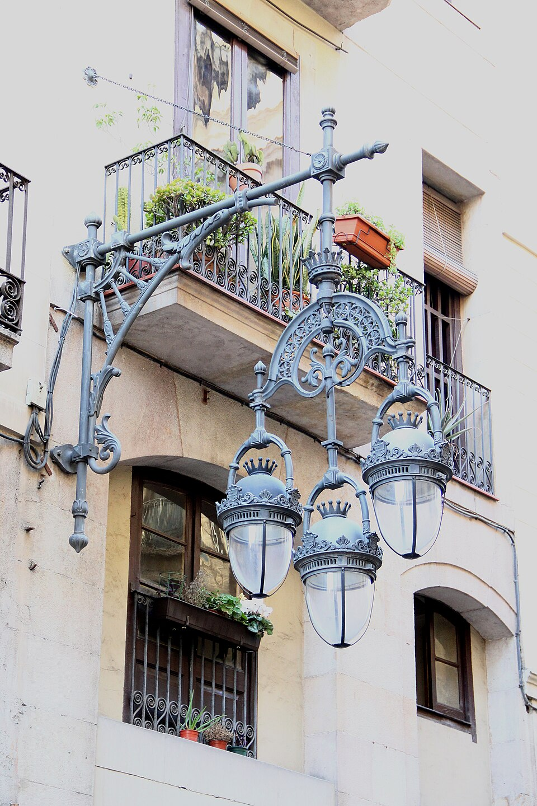
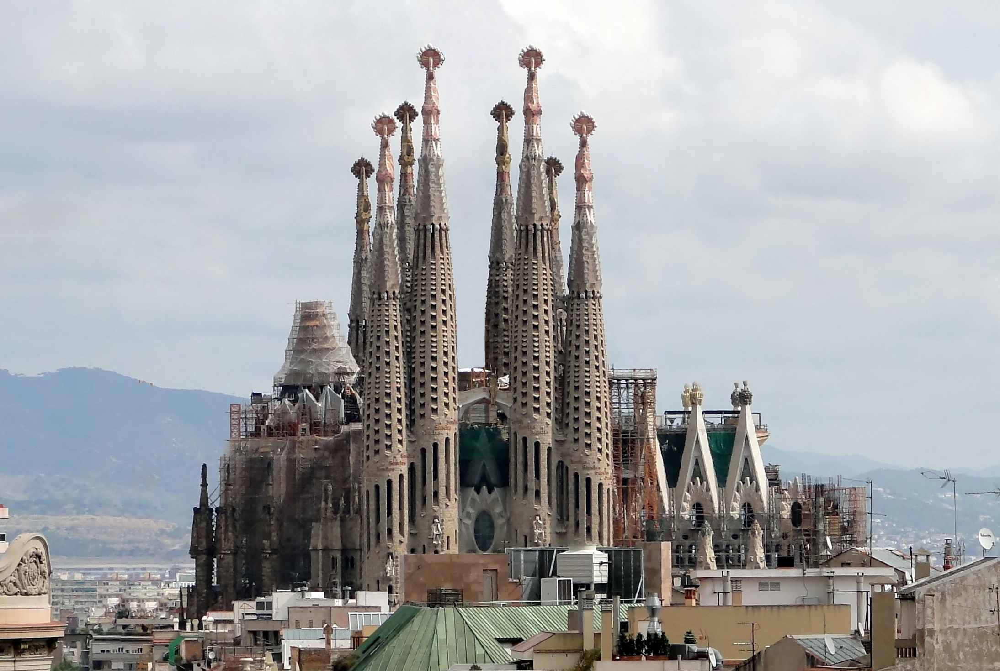

Willkommen in Barcelona
Barcelona ist die Hauptstadt Kataloniens im Nordosten Spaniens. Die Stadt liegt direkt am Mittelmeer, hat rund 1,6 Millionen Einwohner und ist bekannt für Architektur, Kultur, Strand und Fußball.
Geschichte
Von der römischen Siedlung bis zu den Olympischen Spielen 1992: Hier erfährst du, wie Barcelona zu der Stadt wurde, die sie heute ist.

Sehenswürdigkeiten
Sagrada Família, Park Güell, Casa Batlló und die Rambla: Die wichtigsten Orte im Überblick.
